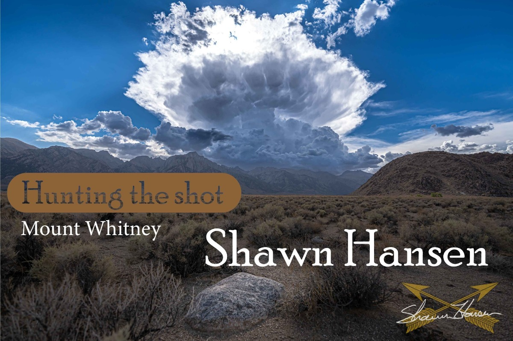

Hunting the Shot, Mount Whitney CA
July 2022: Hiked the tallest mountain in the lower 48 states, Mt. Whitney, and I was able to get some photos along the way.
Truly an amazing experience. Thank you to all of my hiking companions. The connections and memories that you make along the road of life are what make it worth living.
Remember that your driveway leads to the rest of the world..